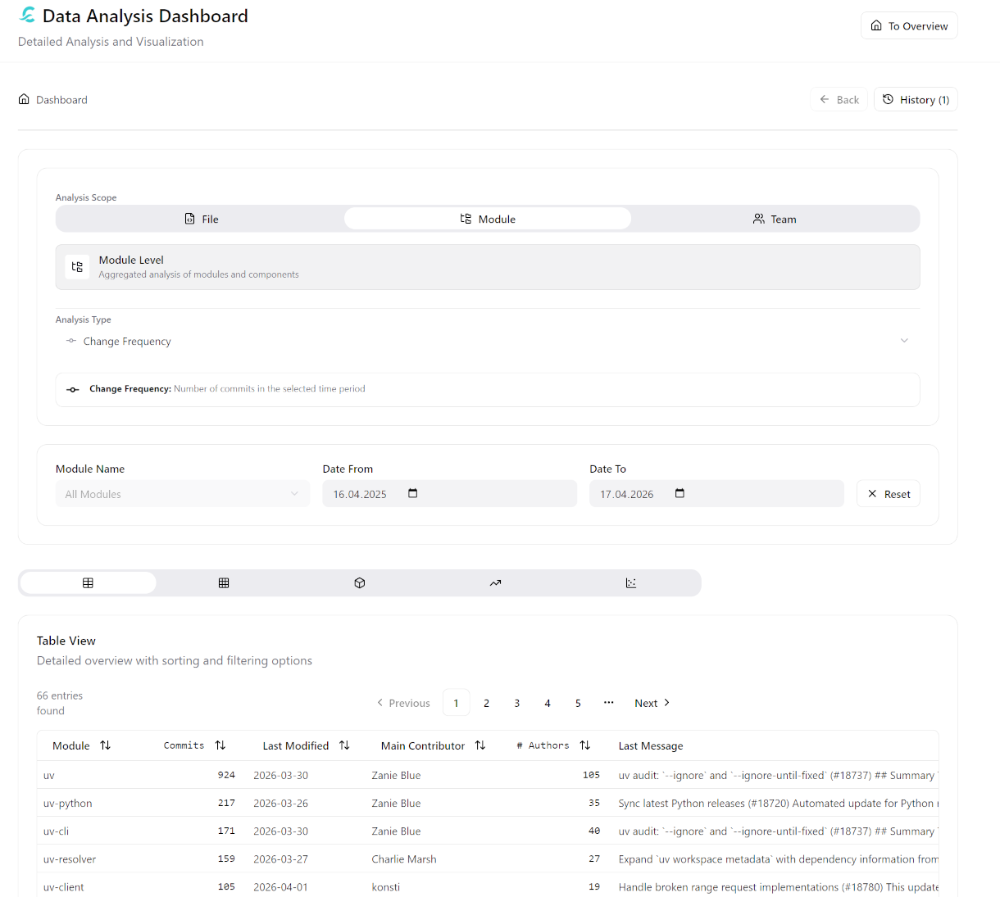
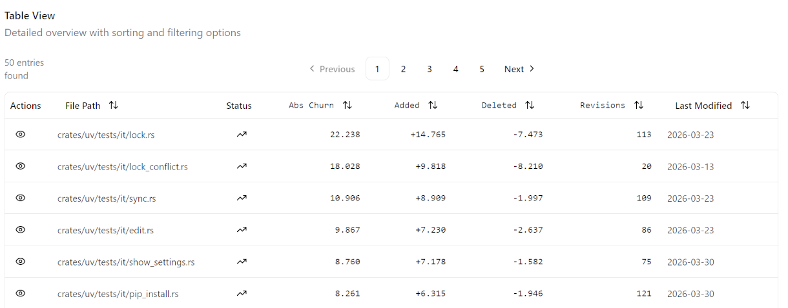
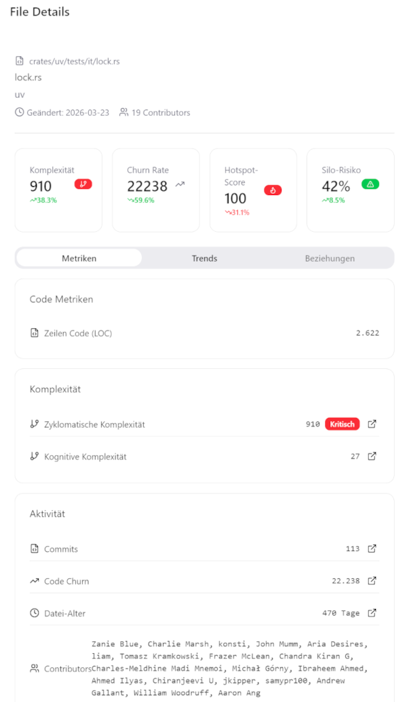
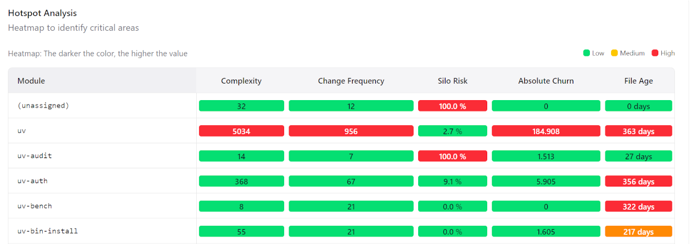
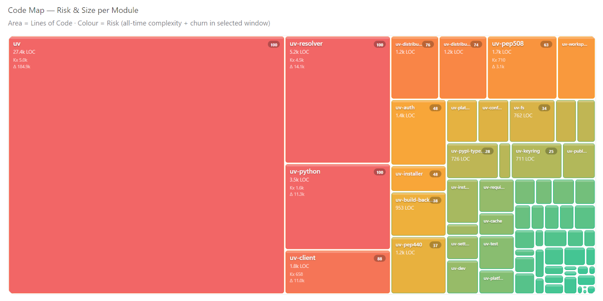
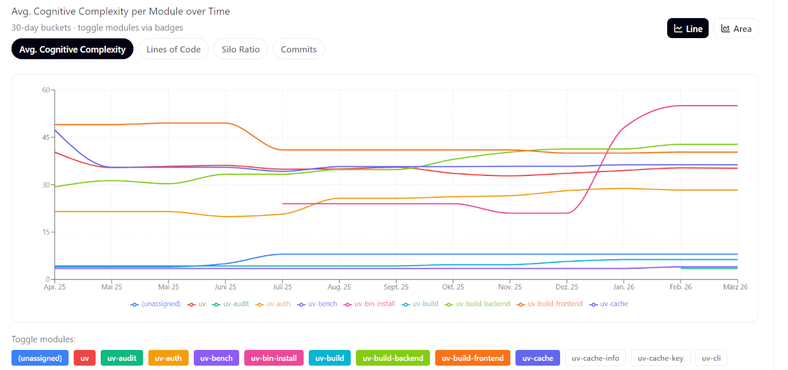
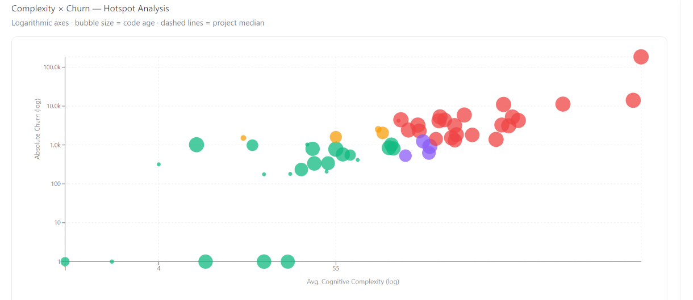

Dashboard User Guide
The Calyntro Dashboard is your central hub for exploring the health and evolution of your software project. This guide explains how to navigate the interface and use its features effectively.

Views
Calyntro provides five complementary views. The Table view is available for all analysis scopes (file, module, team). The remaining four views — Hotspot Analysis, Code Map, Trend Analysis, and Scatter Analysis — are available exclusively in Module scope, where the data volume and aggregation level make them meaningful.
When a visual view is active, the analysis-type selector is disabled. Switch back to the Table view to change the analysis dimension.
1. Table View
The default view. A detailed, sortable list of all files or modules matching your current analysis selection and filters.
Sort: Click any column header to sort by that metric.
Quick Actions: * Eye Icon: Opens a side panel with detailed information about the selected file.

6. File Details
When you click the Eye Icon in the Table View, the File Detail View opens on the right side. This view provides a deep dive into the selected file’s health and history.
{kind=link}

The File Detail View is structured into several sections:
Header: Displays the full file path, the assigned module, the date of the last modification, and the total number of contributors.
KPI Cards: Four key metrics are highlighted at the top: * Complexity: The current cyclomatic complexity of the file. * Churn Rate: The frequency of changes relative to the analysis period. * Hotspot Score: A composite risk value (0–100) indicating the file’s importance as a potential refactoring candidate. * Silo Risk: The percentage of knowledge concentrated in too few developers.
Metrics Tab: * Code Metrics: Shows basic statistics like Lines of Code (LOC). * Complexity: Detailed values for Cyclomatic and Cognitive Complexity, including a qualitative rating (Low to Critical). * Activity: Historical data including total number of commits, absolute code churn, file age in days, and a list of all contributors.
Trends Tab: Visualizes the percentage change of the four main KPIs over the selected analysis period, helping you identify whether a file’s health is improving or deteriorating.
Many metrics in the detail view are interactive. Clicking on a metric (where available) will navigate you to the corresponding visual analysis view for the entire module, allowing you to see the file in its broader architectural context.
2. Hotspot Analysis
A heatmap matrix showing all modules across five risk dimensions simultaneously: Complexity, Change Frequency, Silo Risk, Absolute Churn, and Code Age. Each cell is coloured on a 0–100 scale relative to the current module set.
Use this view to compare modules across multiple risk axes at a glance — a module that scores red across three or more dimensions simultaneously warrants immediate architectural attention.

3. Code Map
A treemap in which cell area represents Lines of Code and cell colour represents composite risk (60 % cognitive complexity + 40 % churn, both normalised). Large red cells are the most critical: they are high-volume modules that are both cognitively demanding and actively churning.
Use this view to calibrate effort against impact — it makes immediately visible whether your most complex code is also your biggest code.

4. Trend Analysis
Line or area charts of up to ten modules over time, with a shared time axis. Four metrics are selectable via toggle buttons: Cognitive Complexity, Lines of Code, Silo Ratio, and Commits.
Use this view to detect directional problems early — a module whose complexity and LOC are both rising over multiple periods is accumulating structural debt, regardless of how it looks in a point-in-time snapshot.

5. Scatter Analysis
A bubble chart plotting Cognitive Complexity (X-axis) against Absolute Churn (Y-axis) for every module, with bubble size proportional to code age. Both axes are logarithmic. Dashed reference lines mark the project medians, dividing the chart into four quadrants: Hotspots (red), Dormant Risk (purple), Non-critical Churn (yellow), and Healthy (green).
Use this view to prioritise refactoring candidates — modules in the top-right red quadrant are the statistically most likely sources of future defects.
